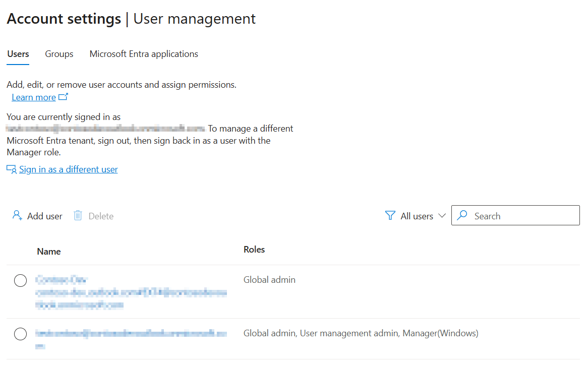
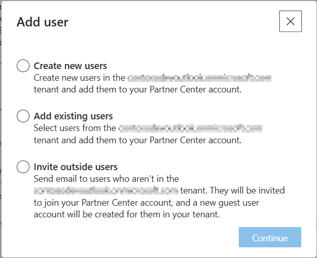

Manage users in your Partner Center account
To manage users in your Partner Center account, go to the User management page under Account settings and select the User management tab. You must be signed in with a Manager account that also has global administrator permissions for the Microsoft Entra ID tenant you're working in.

To add users you will have additional options described below.

Create new users
- From the User management page (under Account settings), click on Add users, then choose Create new users.
- Enter the first name, last name, and username for the new user.
- You may need to provide a Password recovery email in case the user needs to reset their password.
- In the Roles applicable to partner programs section, if you want the new user to have a global administrator account in your organization's directory, check the option labeled Global admin (has full access to all administrative and Partner Center features). This will give the user full access to all administrative features in your company's Microsoft Entra ID. They'll be able to add and manage users in your organization's directory (though not in Partner Center, unless you grant the account the appropriate role/permissions).
- In the Groups section, select any groups to which you want the new user to belong. This section will be shown only if there are available groups in your organization's tenant.
- In the Roles applicable to developer programs section, specify the role(s) or customized permissions for the user.
- Click Save.
- On the confirmation page, you'll see sign-in info for the new user, including a temporary password. Be sure to note this info and provide it to the new user, as you won't be able to access the temporary password after you leave this page.
Add existing users
You can select users who already exist in your organization's tenant and give them access to your Partner Center account.
From the User management page (under Account settings), click on Add users, then choose Add existing users.
Select one or more users from the list that appears. You can use the search box to search for specific users.
Tip
If you select more than one user to add to your Partner Center account, you must assign them the same role or set of custom permissions. To add multiple users with different roles or permissions, repeat these steps for each role or set of custom permissions.
When you have finished selecting users, click Next.
In the Roles applicable to developer programs section, specify the role(s) or customized permissions for the selected user(s).
Click Add.
Invite outside users
- From the User management page (under Account settings), click on Add users, then choose Invite outside users.
- Enter one or more email addresses (up to ten), separated by commas or semicolons.
- When you have finished entering one or more email addresses, click Next.
- In the Roles applicable to developer programs section, specify the role(s) or customized permissions for the selected user(s).
- Click Invite.
The users you invited will get an email invitation to join your account, and a new guest user account will be created for them in your Microsoft Entra ID tenant. Each user will need to accept their invitation before they can access your account.
Important
Outside users that you invite to join your Partner Center account can be assigned the same roles and permissions as other users. However, outside users will not be able to perform certain tasks in Visual Studio, such as associating an app with the Store, or creating packages to upload to the Store. If a user needs to perform those tasks, choose Create new users instead of Invite outside users. (If you don’t want to add these users to your existing Microsoft Entra ID tenant, you can create a new tenant, then create new user accounts for them in that tenant.)
Changing a user's directory password
If one of your users needs to change their password they can do so themselves if you provided a Password recovery email when creating the user account. You can also update a user's password by following the steps below (if you are signed in with a global administrator account in your Microsoft Entra ID tenant in order to change a user's password). Note that this will change the user's password in your Microsoft Entra ID tenant, along with the password they use to access Partner Center.
From the User management page (under Account settings), click on the user that you want to edit.
Click on Password reset button at the bottom of the page.
A confirmation page will appear showing the sign-in info for the user, including a temporary password.
Important
Be sure to print or copy this info and provide it to the user, as you won't be able to access the temporary password after you leave this page.
Edit a user
- From the User management page (under Account settings), click on the user that you want to edit.
- Make your desired changes. For a user, you can edit the user's first name and last name. You can also select or deselect groups in the Groups section to update their group membership. Remember that these changes will be made in your organization's directory as well as in your Partner Center account.
- For changes related to Partner Center access, select or deselect the role(s) that you want to apply, or select Customize permissions and make the desired changes. These changes only impact Partner Center access and will not change any permissions within your organization's Microsoft Entra ID tenant.
- Click Update.
Important
Changes made to roles or permissions will only affect Partner Center access. All other changes (such as changing a user's name or group membership, or the Reply URL for an Microsoft Entra ID application) will be reflected in your organization's Microsoft Entra ID tenant as well as in your Partner Center account.
Remove a user
- From the User management page (under Account settings), select the user that you want to remove.
- Click on Delete.
- After confirming the removal, that user will no longer be able to access your Partner Center account (unless you add them again later).
Important
Checking the Delete from account option means that the user will no longer have access to your Partner Center account. It doesn't delete the user from your organization's tenant.
Important
Checking the Delete from organization option means that the user will no longer have access to your Partner Center account and will also be deleted from your organization's tenant.